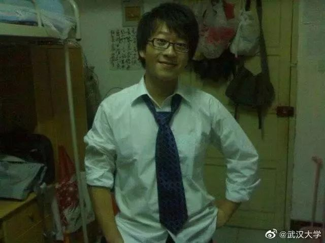

李文亮医生，那个最早预警新冠肺炎的人，走了
原文链接 备份链接 世上没有从天而降的英雄，只有挺身而出的凡人。 李文亮医生走了。 2020年2月7日凌晨3点48分，武汉市中心医院微博发布消息：我院眼科医生李文亮，在抗击新型冠状病毒感染的肺炎疫情工作中不幸感染，经全力抢救无效， …

1月底，李文亮的名字才第一次被大众所知，此前他只是“被训诫的武汉医生”。
在此之前，这场疫病还被称为“不明原因肺炎”。身为临床医生，他在群里提醒同学注意防护，但自己不幸感染，并住进了重症监护室。
2月1日，他发出了最后一条微博：“今天核酸检测结果阳性，尘埃落定，终于确诊了。”
谁也没想到，未满35岁的李文亮医生，很快走到了生命的结尾。

提醒
让家人亲人注意防范
2019年12月30日，武汉市中心医院眼科医生李文亮看到一份病人的检测报告，“检出SARS冠状病毒高置信度阳性指标”。
当天下午五点多，他在大学同学微信群中发了几句话：“华南海鲜市场确诊了7例SARS”“最新消息是，冠状病毒感染确定了，正在进行病毒分型”“大家不要外传，让家人亲人注意防范”。
2019年12月31日，武汉市卫健委发布消息表示，到目前为止，调查未发现明显人传人现象，未发现医务人员感染，对病原的检测及感染原因的调查正在进行中。
2020年1月1日，武汉市公安局官方微博发布消息称，近日武汉部分医疗机构发现接诊了多例肺炎病例，武汉市卫健委就此发布了情况通报。但一些网民在不经核实的情况下，在网络上发布、转发不实信息，造成不良社会影响。公安机关经调查核实，已传唤8名违法人员，并依法进行了处理。
李文亮生前曾回忆，1月3日，他被通知到派出所签下一份训诫书。训诫书显示，他的违法行为是在互联网上发布不属实言论。“我当时想着不被拘留已经算好了，直接就签字了。”他说。
事后回忆，他仍感到疑惑： “那时我还在想，通报怎么还在说没有人传人，没有医护感染”。
感染
接诊病人未做特殊防护
签了字之后，他一直正常工作，接诊病人。
1月8日这天，来了一名82岁的女性患者，急性闭角型青光眼。
彼时，新冠肺炎还是“不明原因的病毒性肺炎”，在武汉市卫健委1月11日的通报中，“未发现明确的人传人证据”。
李文亮也大意了。
与平时接触其他患者一样，这次他也没有做特殊防护，这名病人也没有出现发热等症状。
1月9日，李文亮前一天接诊的这名患者发烧。她的CT报告显示，症状是“双肺磨玻璃样病变”。
1月10日，李文亮开始出现咳嗽症状。1月11日，发热。1月12日，住院，随后住进重症监护室。
他在住院治疗期间曾回忆，“等她CT做完，我就高度怀疑她是病毒性肺炎”。李文亮分析，这名82岁患者CT显示的症状，是病毒性肺炎的表现，而且已经排除了常见病毒感染的情况。“不过，因为医院还没有用于检测确诊病人的试剂盒，当时没有给她确诊”。

1月30日，住在武汉市中心医院重症监护病房的李文亮一直在打针，还是无法自主呼吸、无法活动，要进行高流量吸氧。
此前，李文亮做了一次核酸检测，但一直没出结果。经过治疗后又进行一次检测，“我的核酸显示为阴性了”。
他还是一如既往地乐观：“精神状态好了一些，可以断续用手机打字上网。”
那时他曾估计自己的病情是，“目前没有生命危险，只是肺功能恢复需要比较长的时间”。
家属不能进重症监护室，但医院的同事们帮我买了很多生活用品。病房外的鼓励和支持，让他从病痛中偶有慰藉。
此前，他的父母也出现了“肺部磨玻璃样病变”，并住进了医院。他曾表示，二老“暂时没有生命危险”。
“我爱人和孩子目前不在武汉，他们很安全。”那几天，家人不能照顾身在重症监护室的他，但隔着手机屏每天互相加油鼓励。
消逝
从确诊到离开只有七天
李文亮一直表现得很乐观。
“在此我想特别澄清，我没有被吊销执照，请大家放心，我一定积极配合治疗，争取早日出院！”1月31日，他发微博说。
此前的两次核酸检测，李文亮都没有被确诊。
2月1日，在重症监护室住了半个多月后，他的核酸检测结果呈阳性。那天他发了条微博，向大家宣布这个消息：“尘埃落定，终于确诊了”。
在这条微博底下，他喜爱的电视剧《庆余年》主演张若昀给他留言，“加油，祝您早日康复”。
晚上九点多了，躺在重症监护室的他仍然回复了张若昀：“谢谢，期待庆余年2”。
“对病情我还是比较乐观的。估计还要在床上躺半个月，才能让肺功能大部分恢复。”
他甚至期待着，身体康复后还要上一线——“疫情还在扩散，不想当逃兵！至于疫情以后的事，还没想太多。”1月30日，他喘不上气，没有太多力气说话，在手机上发出了这句话。
就像他自己所估计的，所有人一边为他揪着心，一边期盼还不满35岁的他早日康复。
2月6日夜里，关于李文亮的坏消息突然传来，像病房里的消毒水味道一样刺痛着人们的神经。
“病危”，“全力抢救中”，“全力抢救无效”。
2月7日凌晨，武汉市中心医院宣布了李文亮的死讯。
其人
正期待新生命降临
1月28日，最高法官方微信发布了一篇关于疫情中谣言治理的文章，谈及武汉公安机关处罚8名发布“华南水果海鲜市场确诊7例SARS”的事件。
文章认为，8名信息发布者发布的内容并非完全捏造，主观上并无恶意，考虑到该类谣言在客观上对一定范围群体自我保护意识的提高有一定积极影响，且澄清该类事实较为容易，执法机关对这样的“虚假信息”理应保持宽容态度。
但是，这位“吹哨人”走了。
李文亮，1985年10月12日生，辽宁锦州人。2004年考入武汉大学临床医学（七年制）专业就读。在厦门短暂工作3年后，2014年重返武汉，在武汉市中心医院工作至今。
这个还没满35岁的年轻医师，如果不是因被训诫一事，或许他的名字不会为众人所知，在生活中和普通人也没有太多不同。

大学时期的李文亮 。
喜欢看剧，最近喜欢看《庆余年》，还期待着这部剧推出续集；
喜欢打卡，不论是广州塔、巴厘岛还是工作单位、城市公园，他都爱拍照留念；
喜欢美食，忙碌之余会心心念念吃一份炸鸡腿；
喜欢转发抽奖，智能手机、电脑、车厘子，“终于不再是抽奖绝缘体”的那次，他抽中了一盒湿巾；
保持愤怒，为医护同行或是患者的不幸遭遇感到难过……
2月7日凌晨，李文亮不幸病逝的消息传来后，武汉市中心医院的同事们无不悲痛，“他真的是很好的人”。
“7228一路走好，xxxx向你致敬！”7228是李文亮的工号，一名正在武汉市中心医院参加抗疫前线工作的医护人员在朋友圈悼念。
“爱乐维好贵啊。”2019年11月29日，他曾经发了这样一条微博，配图是一种妊娠期和哺乳期妇女补充维生素、矿物质和微量元素的复合维生素片。当时34岁的他，有一个完满的家庭，大儿子4岁，妻子怀着小宝宝，全家人正期待着新生命的降临。
只是他的生命，在这个2月戛然而止。
南方都市报（nddaily）原创报道
南都记者 向雪妮
* 南方都市报（nddaily）原创内容未经授权，不得转载。

痛惜！致敬！

▊ 南都君特选（戳下方标题）
点个“在看” ↓↓
原文链接 备份链接 世上没有从天而降的英雄，只有挺身而出的凡人。 李文亮医生走了。 2020年2月7日凌晨3点48分，武汉市中心医院微博发布消息：我院眼科医生李文亮，在抗击新型冠状病毒感染的肺炎疫情工作中不幸感染，经全力抢救无效， …
原文链接 备份链接 澎湃新闻记者 朱莹 黄霁洁 葛明宁 特约撰稿 张小莲 实习生 刘昱秀 沈青青 2月7日凌晨2点58分，武汉市中心医院眼科医生李文亮因感染新冠肺炎，抢救无效离世。 武汉市中心医院的官方微博7日凌晨发布了这一消息。当天上 …
原文链接 备份链接 武汉中心医院眼科医生李文亮（1986-2020）（资料图/图） 全文共*5612*字，阅读大约需要14分钟。 李文亮还活着吗？李文亮抢救过来了吗？这位武汉眼科医生的命运，在这个深夜牵动着很多人的心。直到凌 …
原文链接 备份链接 他曾说，“等病好了，还上一线，不想当逃兵。” 2月7日中午13:02，中央纪委国家监委网站发布消息，经中央批准，国家监察委员会决定派出调查组赴湖北省武汉市，就群众反映的涉及李文亮医生的有关问题作全面调查。 2月6日 …
原文链接 备份链接 本报记者 张家振 武汉报道 “今天核酸检测结果阳性，尘埃落定，终于确诊了。”2月1日上午10时41分，疫情“吹哨人”李文亮对外界宣布了这一消息。李文亮是武汉市中心医院的一名眼科医生，因最早于2019年12月30日向外 …